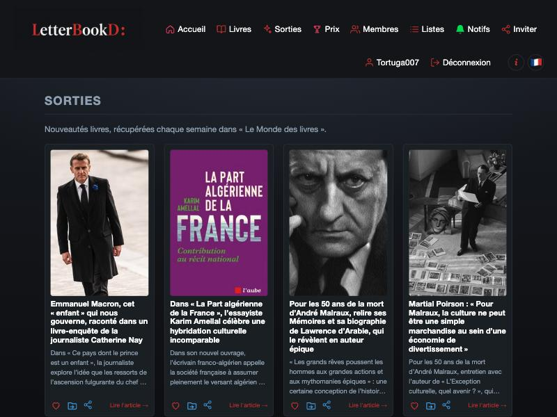

Sorties
À quoi ça sert : Suivre les nouveautés littéraires chaque semaine. L'application récupère automatiquement la sélection du Monde des livres pour nourrir les clubs en idées de lecture.

Parcours
Grille de cartes, une par sortie récente : couverture ou image, titre avec guillemets, extrait, et une barre d'actions en bas (favoris / ajouter à une liste / suggérer / 'Lire l'article'). La récupération tourne une fois par semaine en tâche de fond (planificateur Django).
Chaînes d'action
Chaque ligne décrit un déclencheur dans l'interface, ce qu'il ouvre (modal ou formulaire), et l'effet produit.
| Déclencheur | Modal / Champs | Effet |
|---|---|---|
| Icône cœur | — | Ajoute/retire la sortie à tes 'Favoris'. Si la sortie n'est pas encore un livre du catalogue, elle y entre à ce moment-là. |
| Icône dossier | Modal 'Ajouter à une liste'. | Place la sortie dans une liste (existante ou nouvelle). |
| Icône partage/triangle | Modal 'Suggérer ce livre'. | Envoie une suggestion privée à un membre que tu suis. |
| Lien 'Lire l'article' | — | Ouvre l'article d'origine du Monde dans un nouvel onglet. |
Modales